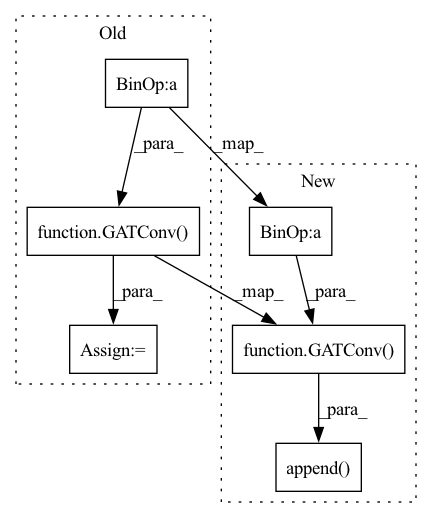

Pattern ID :9353

Before Change
head = num_head
self.conv = Sequential(*conv, loc=1) // `loc=1` specifies the location of features.
self.out_conv = GATConv(in_features * head, out_features,
num_heads=1, bias=bias,
feat_drop=dropout,
attn_drop=dropout)
def reset_parameters(self):
for conv in self.conv:
After Change
in_features = hid
head = num_head
conv.append(GATConv(in_features * head, out_features,
num_heads=1, bias=bias,
feat_drop=dropout,
attn_drop=dropout))
self.conv = Sequential(*conv, loc=1) // `loc=1` specifies the location of features.
def reset_parameters(self):
In pattern: SUPERPATTERN
Frequency: 4
Non-data size: 6
Instances
Fragment ID: 33509391
Project Name: edisonleeeee/greatx
Commit Name: 59230389e0df4f1fa7f62917424108f0bed9b9fa
Time: 2021-12-20
Author: cnljt@outlook.com
File Name: graphwar/models/gat.py
M Class Name: GAT
N Class Name: GAT
M Method Name: __init__(9)
N Method Name: __init__(9)
M Parent Class: nn.Module
N Parent Class: nn.Module
M File Name: graphwar/models/gat.py
N File Name: graphwar/models/gat.py
M Start Line: 78
M End Line: 81
N Start Line: 62
N End Line: 81
'>
Before Change
inc = in_channels
pre_head = 1
for hid, num_head, act in zip(hids, num_heads, acts):
layer = GATConv(inc * pre_head,
hid,
heads=num_head,
bias=bias,
dropout=dropout)
layers.append(layer)
act_fns.append(get_activation(act))
paras.append(
dict(params=layer.parameters(), weight_decay=weight_decay))
After Change
conv = []
conv.append(nn.Dropout(dropout))
for hid, num_head, act in zip(hids, num_heads, acts):
conv.append(GATConv(in_channels * head,
hid,
heads=num_head,
bias=bias,
dropout=dropout))
conv.append(activations.get(act))
conv.append(nn.Dropout(dropout))
in_channels = hid
head = num_head
'>
Fragment ID: 33509390
Project Name: edisonleeeee/graphgallery
Commit Name: 4a0b252917d5068be1fc68f2752b58b6119c3a21
Time: 2021-02-09
Author: cnljt@outlook.com
File Name: graphgallery/nn/models/pyg/gat.py
M Class Name: GAT
N Class Name: GAT
M Method Name: __init__(10)
N Method Name: __init__(10)
M Parent Class: TorchKeras
N Parent Class: TorchKeras
M File Name: graphgallery/nn/models/pyg/gat.py
N File Name: graphgallery/nn/models/pyg/gat.py
M Start Line: 27
M End Line: 58
N Start Line: 23
N End Line: 45
'>
Before Change
inc = in_channels
pre_head = 1
for hid, num_head, act in zip(hids, num_heads, acts):
layer = GATConv(inc * pre_head,
hid,
activation=get_activation(act),
num_heads=num_head,
feat_drop=dropout,
attn_drop=dropout)
layers.append(layer)
paras.append(
dict(params=layer.parameters(), weight_decay=weight_decay))
inc = hid
After Change
head = 1
conv = []
for hid, num_head, act in zip(hids, num_heads, acts):
conv.append(GATConv(in_channels * head,
hid,
num_heads=num_head,
feat_drop=dropout,
attn_drop=dropout))
conv.append(activations.get(act))
conv.append(nn.Flatten(start_dim=1))
conv.append(nn.Dropout(dropout))
in_channels = hid
'>
Fragment ID: 33509387
Project Name: edisonleeeee/graphgallery
Commit Name: 4a0b252917d5068be1fc68f2752b58b6119c3a21
Time: 2021-02-09
Author: cnljt@outlook.com
File Name: graphgallery/nn/models/dgl_torch/gat.py
M Class Name: GAT
N Class Name: GAT
M Method Name: __init__(9)
N Method Name: __init__(9)
M Parent Class: TorchKeras
N Parent Class: TorchKeras
M File Name: graphgallery/nn/models/dgl_torch/gat.py
N File Name: graphgallery/nn/models/dgl_torch/gat.py
M Start Line: 25
M End Line: 53
N Start Line: 23
N End Line: 44